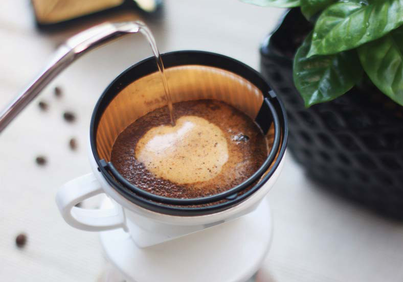
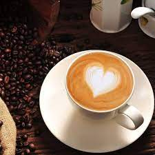
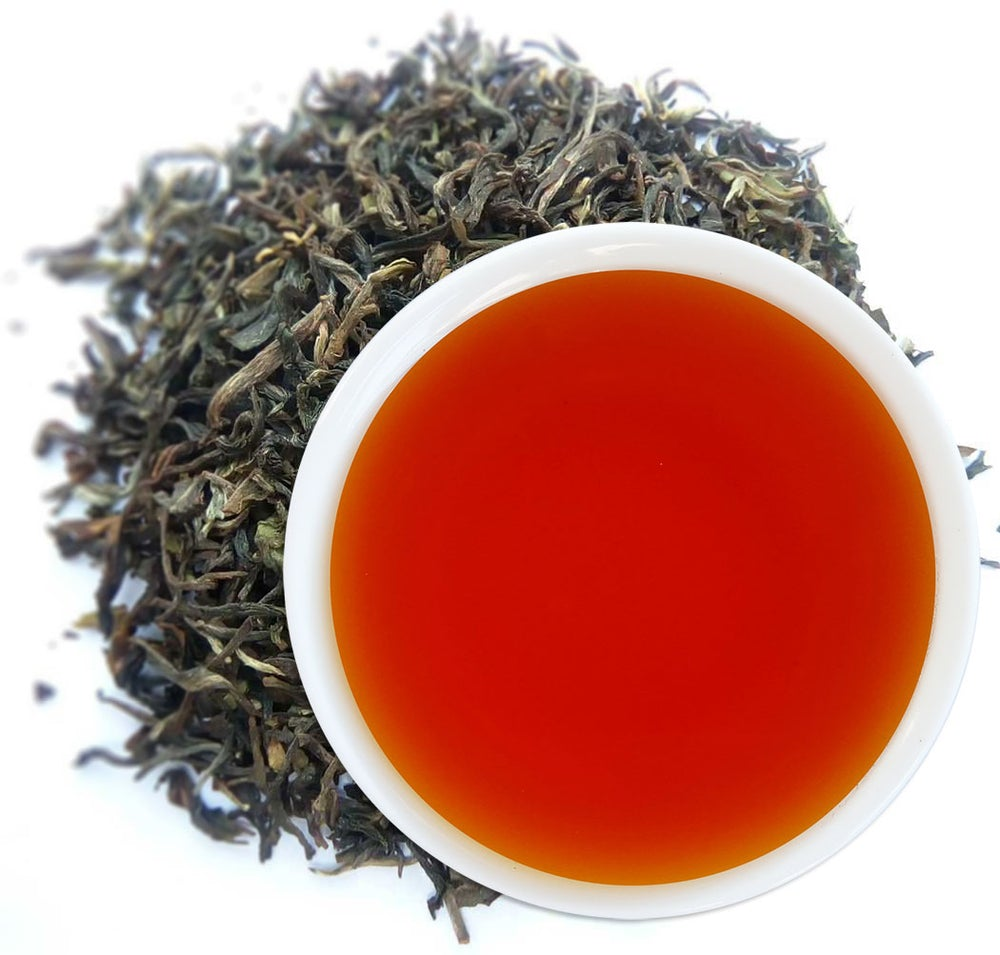
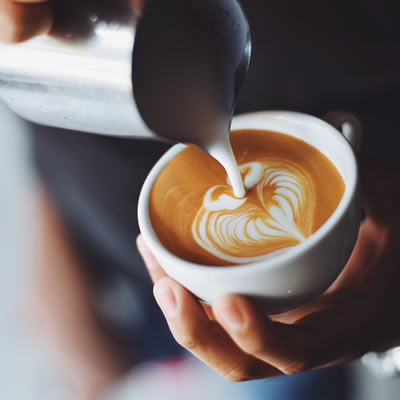
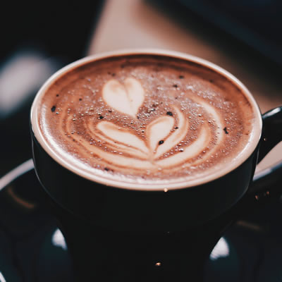
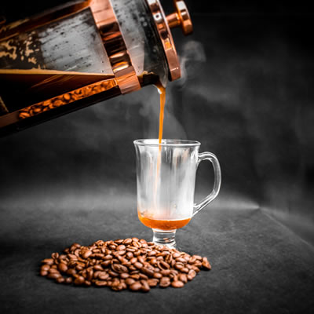

COFFEE MENU
| HOT | ICED | |
Espresso

Espresso coffee is made by using very finely ground or slightly finely ground coffee powder with high heat and high pressure water.
|
$50 | $50 |
|---|---|---|
Cafè Americano

It is usually made by adding hot water to espresso coffee or an espresso machine. After extracting the espresso, let the machine supply water until it is complete.
|
$60 | $60 |
|
Cafè Latte

The composition of a general latte is one-third of espresso, two-thirds of fresh milk, and a little milk froth. Compared with cappuccino, it has more fresh milk flavor.
|
$55 | $55 |
Mocha

It is usually made from one-third of espresso and two-thirds of milk froth, but it also adds a small amount of chocolate.
|
$60 | $60 |
Cappuccino

The difference between cappuccino and latte is the addition of milk froth, and the recipe is 1:1:1 for espresso, fresh milk and milk froth.
|
$60 | $60 |
Blue Mountain Coffee

Blue Mountain coffee is best roasted in a medium-roast method, which can make the oil of the coffee beans surface and burn out a shiny brown.
|
$70 | $70 |
Dutch Coffee

Using ice cubes to naturally melt into ice water, drop by drop into coffee powder to extract coffee, this process often takes several hours, so the price is more expensive.
|
$70 | $70 |
TEA MENU
| HOT | ICED | |
Black Tea

Black tea is a kind of fully fermented tea, and it is the main tea product in Chinese tea culture.
|
$40 | $40 |
|---|---|---|
Assam Black Tea

Assam Black tea produced in Assam in northeastern India is a cultivated species of tea trees.
|
$50 | $50 |
Milk Tea

A beverage mixed with tea and milk is prepared and drunk. The origin and production method vary depending on the characteristics of each region.
|
$55 | $55 |
|
Darjeeling

Produced in the Darjeeling Plateau in the foothills of the Himalayas in the northern state of West Bengal, India. It is a kind of black tea with a fruity and rich taste.
|
$50 | $50 |
Earl Grey

A flavored tea based on Qimen black tea or Lapsang Souchong, paired with Ceylon black tea, and added with bergamot essential oil.
|
$60 | $60 |
Oolong Tea

Taiwan Oolong Tea, also known as "Half-spherical Baozhong Tea", refers specifically to tea species that are made from "Oolong tea species and processed in the form of oolong tea"
|
$55 | $55 |
English Breakfast Tea

Also known as English breakfast tea, English breakfast tea or English morning tea, it is a classic British black tea blend.
|
$60 | $60 |
SPECIAL ITEMS

Coffee Art $45

Soft Deli Coffee $40

Speciality Tea $35
ABOUT OUR COFFEE
Our coffee mainly consists of three original species, Coffea Arabica, Coffea Robusta and Coffea Liberica. Among them, Arabica is mainly used for gen- eral drinking, while Robusta is mainly used for instant coffee.
In fact, in recent years, well-care Robusta coffee has also appeared in India. It is grown at high altitudes and is carefully protected from pests, which greatly improves the flavor of Robusta coffee.
TALK TO US
You can contact us in the following ways.